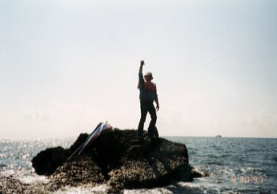

最新情報
1997 BS7H（ Scarborough Reef）DX-Pedition
DXペディションの全記録

【設営の準備】スカボロー・リーフに到着して、まず最初の仕事は運用場所となるロックを探す事。このリーフは一辺が約16Ｋｍの三角形をしている。 リーフのほとんどが水面下に隠れていて、わずかに突き出した、 幾つかのロックが運用場所となるのだ。 ロック探しの目印は船からも見えたリーフの北東の座礁船。 1995年の第2回のBS7H・DX-Peditionにも参加したBA1OK・Wong以下、JA1BK、N7NG、JA1RJUが第一陣として、 06:00に船外機付きの偵察ボートでロック探しに出掛ける。 座礁船を右手に見ながらリーフに進入を試みるが、船底が岩礁に接触、進めなくなる。 ちょうど引き潮の時間に当たったようだ。 幾度か場所を変えながら進んで見るが失敗。 一旦船に戻り、もう一度出直す事にする。 船に戻り、リーフの中ほどの漁船を眺めていると、 その中の一隻がスピードを上げながらわれわれが停泊している外洋の方向に出てきた。 「あそこだ！」、すぐ偵察ボートに飛び乗り、リーフ目掛けて進む。 ここで漁をしている連中は出入り口をよく知っているのだ。 本船からリーフ中ほどに少し見えていたロックと思われたものは、近づいて見ると朽ち果てた座礁船の残骸だった。 残骸には白い旗の付いた棒が一本立っている。 漁師らはこの旗を目印にして出入りしていたらしい。 ボートが少し離れるとこの目印は肉眼では見えなくなるので、本船からは当然見えなかったのだ。 運良く、われわれの偵察ボートはリーフの内側に入る事が出来た。リーフの内側から目指すロックを探す事にする。 途中、フィリピンの漁船が数隻漁をしている脇を通り過ぎたが、けげんな顔をしながらも手を振ってくれた。 ロックは今度は直ぐに見つかった。 最初接近した場所からかなり離れたところにその岩礁はあった。 Wongは「これが #2ロックだ」と言う。 そう言えば前回のBS7HのQSLカードに載っていた、あの見覚えのある岩だ。 前回の運用でもメインの運用場所として使われた、比較的大きな岩礁だ。 外洋からの波がロックの回りを洗っている。 さっそくN7NG・Wayneがロックに飛び移り、大型のパラソルを広げ、後から来る設営班の目印の役をすることになる。  “目印”のためロックに残されたN7NG･Wayne 接近してみると予想していたより小さな岩だ。 1995年の時の写真では、もう少し横に長かったはずなのに、 今は“ドングリの頭”の様に尖った岩に変形している。 この岩から50ｍほど離れた所に、ラクダのコブのような小さな岩が2つ見える。 どうもこの岩が #1ロックから離れたものらしい。 台風かなにかの強い波で削り取られて分離してしまったものと思われる。 #1ロックには私（JA1RJU）がパラソルと荷物を持って飛び移る。 アンテナ基台の三脚も持参したが、平らな場所など10cm角も無い。 とにかくこの“ドングリの頭”にしが み付いた状態で目印のパラソルを広げる。 天気は快晴だが風が強く、立てかける事も出来ない。岩を覆う様に風上に横たえるのがヤット。 ドングリの頭にしがみ付いている“蟻”の様な状態で設営班が来るのを待つ事にする。 こんな場所に本当に無線機やアンテナが設置できるのか...心配になってきた。 鳶（とび）職用の地下足袋を履いて来たのは正解だった。 足元の海水は透き通るようにきれいで、珊瑚や熱帯魚の泳いでいるのが見える。 水深は50Cm～2ｍぐらいか。 ここは外洋から奥に入り込んだ所なので、波もなくひとまず安心。 2つのロックに“目印”が立ったところで、本船がロックの傍（2kmぐらいか）まで接近してくれたため、 その後の船との往復は楽になった。 間もなく#2ロックの基台建設が始まった。 #2ロックへの機材（無線機類）運搬と、#1ロックの基台建設が 平行して行なわれるなか、私は本船に戻り、#1ロックの機材準備に取り掛かった。 #2ロックからW6RGGが運用するBS7Hの記念すべき第一声（04:49z）は、本船の無線室で感無量の思いで聞いた。 さあ、#1ロックも急がなきゃ！ はやる思いで、ボートに無線機やアンテナを積み込んだ。  1997 BS7H index  BS7H 1997 Home Page BS7H 1997 Home Page |